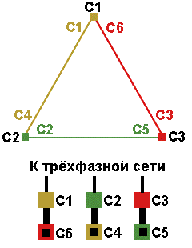
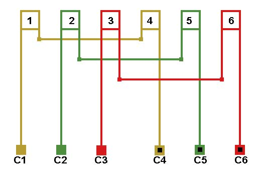
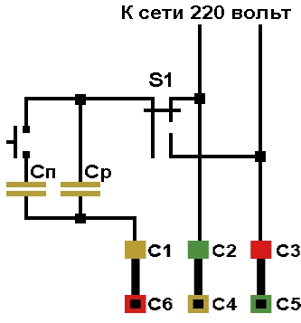

Перейти на главную страницу справочника.
Как запустить трёхфазный электродвигатель в однофазной сети.
- Для запуска трёхфазного асинхронного двигателя в однофазной сети предпочтительнее использовать конденсаторную схему подключения.
- Требуется запустить трёхфазный электродвигатель 220/380 вольт, соединение фаз Δ/Y в однофазной сети. На клеммнике двигателя установите перемычки в положение "треугольник".
Положение "треугольник" на клеммнике двигателя.
Соединение обмотки в треугольник.

Для примера схема соединений обмотки 1500 об. мин., количество параллельных ветвей а=1.

- Подключите электродвигатель к сети как показано на рисунке №1. Где Сп - пусковой конденсатор, Ср - рабочий конденсатор, S1 - переключатель для изменения направления вращения вала электродвигателя (если направление вращения во время эксплуатации изменять не требуется, исключите переключатель из схемы).
Рис №1 
Подключение трёхфазного электродвигателя к однофазной сети.
{kind=link}
- Для запуска и нормальной работы электродвигателя питающая сеть должна выдерживать пусковой ток, а ток при пусковом моменте будет примерно семикратным к номинальному. Напряжение конденсаторов не менее 450 вольт.
- Подбирать емкость рабочего (Ср) и пускового (Сп) конденсаторов электродвигателя на холостом ходу (без нагрузки).
- Увеличивая или уменьшая емкость конденсатора, добейтесь хорошего запуска двигателя. Если электродвигатель не запускается (такое происходит чаще у электродвигателей на 3000 об. мин.), придется проточить на токарном станке алюминиевые короткозамыкающие кольца ротора. Сечение короткозамыкающих колец нужно уменьшить на 20-50%, тем самым увеличатся сопротивление ротора и скольжение. Обычно после увеличения сопротивления ротора электродвигатель запускается легко.
- После того как двигатель запустился замерьте ток холостого хода, который не должен превышать 40-60% от номинального тока указанного на табличке электродвигателя при соединении фаз в треугольник. Ток холостого хода в однофазных и трёхфазных асинхронных электродвигателях зависит от частоты вращения. Чем меньше обороты электродвигателя, тем ближе ток холостого хода к номинальному току электродвигателя. Если ток холостого хода электродвигателя на 3000 об/мин. примерно 40-60% от номинального, то ток холостого хода электродвигателя на 250 об/мин. будет примерно 80-95% от номинального тока указанного на табличке.
- Если ток при холостом ходе завышен, подберите емкость рабочего конденсатора. Запустите двигатель, после разгона отключите часть конденсаторов, в работе оставить примерно 30-50% от общей емкости, уменьшая или увеличивая емкость рабочего конденсатора, подбираем ток холостого хода.
- После установки электродвигателя на оборудование возможна корректировка пускового конденсатора в сторону увеличения емкости, емкость рабочего конденсатора изменять запрещено.
14.04.2012 г.
Литература по данной теме:
Кокорев А.С. "Справочник молодого обмотчика электрических машин" 1979 г.